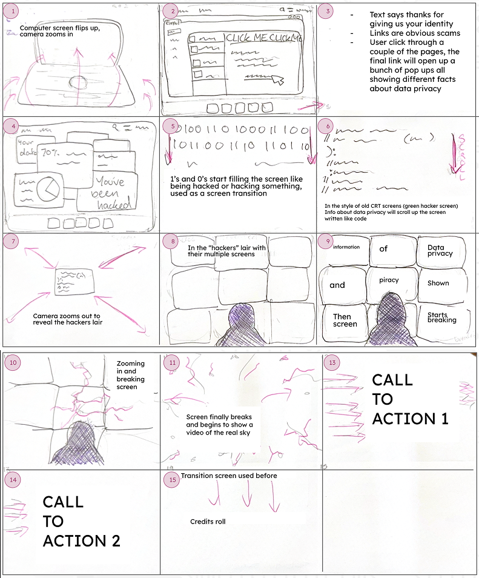

This was a motion design project titled “One Click Is All It Takes”, developed as an animated awareness piece about phishing and online data security. The aim was to communicate how a single impulsive click can lead to serious digital consequences.
The animation follows a familiar digital interface that quickly shifts from normal interaction into a glitch-driven cyber intrusion, revealing how personal data can be exposed within seconds. A CRT/hacker-inspired visual style was used throughout to create tension and reinforce the theme of digital vulnerability. The project combines motion graphics, typographic sequencing, and audio-visual transitions to guide the viewer from everyday online behaviour into a simulated hacking scenario, ending with a clear preventative message: think before you click.
Final Animation
The storyboard develops from research into phishing behaviour, digital literacy, and how users interact with fast-paced online environments. Early planning explored how scam messages rely on urgency and familiarity to trigger immediate responses, often bypassing critical judgement. This informed the decision to structure the animation around a single “click” as the turning point, where a normal interface rapidly shifts into a compromised system.
Visually, the concept was tested through a step-by-step breakdown of escalation: starting with a familiar digital notification, moving into deceptive prompts, and progressing into glitch-based transitions and data visualisation. These stages reflect the way phishing attacks unfold in real time, where a simple interaction leads to layered consequences. The storyboard also explores the idea of scale, expanding from a personal device to a larger surveillance-like environment to reinforce how widespread and systemic data exposure can become.
Research into cybersecurity education influenced the inclusion of a clear prevention layer within the sequence. Rather than presenting information passively, the storyboard embeds key warning signs and behavioural checks directly into the visual narrative, reinforcing practical responses such as verifying sources, avoiding unknown links, and recognising manipulation tactics.
